Key Takeaways
- Microsoft fixed 3 publicly disclosed zero-day vulnerabilities in the June 2026 Patch Tuesday updates.
- GreenPlasma and MiniPlasma could allow attackers to gain SYSTEM-level privileges on Windows devices.
- YellowKey could help attackers bypass BitLocker encryption with physical access via WinRE.
- Security researcher Nightmare Eclipse publicly disclosed the vulnerabilities before Microsoft released patches.
- Organisations should deploy the June 2026 security updates immediately to reduce the risk of exploitation.
Microsoft Fixes 200+ Vulnerabilities in June 2026 Patch Including YellowKey and Defender Issues! YellowKey requires someone to have physical access to a device, so it is mainly a risk for lost, stolen, or unattended laptops. GreenPlasma and MiniPlasma are more serious for organisations because an attacker with basic access to a device can gain full SYSTEM-level control. This could allow them to disable security protections, install malware, steal data, or take control of the device. Organisations should install the June 2026 security updates as soon as possible.
Table of Content
Microsoft Fixes 200+ Vulnerabilities in June 2026 Patch Including YellowKey and Defender Issues
Microsoft addressed a total of 201 vulnerabilities in the June 2026 Patch Tuesday release. The updates cover a wide range of security issues, including privilege escalation, remote code execution, information disclosure, and spoofing vulnerabilities. Organisations should review and deploy these updates promptly to reduce security risks across their environments.
- 27 Spoofing Vulnerabilities
- 19 Security Feature Bypass Vulnerabilities
- 7 Denial of Service Vulnerabilities
- 3 Tampering Vulnerabilities
- 65 Elevation of Privilege Vulnerabilities
- 54 Remote Code Execution Vulnerabilities
- 26 Information Disclosure Vulnerabilities
Read – 2026 June KB5094126 KB5093998 Windows 11 Patch | 3 Zero Day Vulnerabilities and 200 Flaws

Windows BitLocker Security Feature Bypass Vulnerability – CVE-2026-50507
CVE-2026-50507 is important for IT admins because it affects BitLocker, a security feature widely used to protect data on Windows devices. If a laptop or device is lost, stolen, or left unattended, an attacker with physical access could potentially bypass BitLocker protections and access sensitive company data. The devices containing confidential information, customer records, financial data, or intellectual property could be at risk if they are not updated.
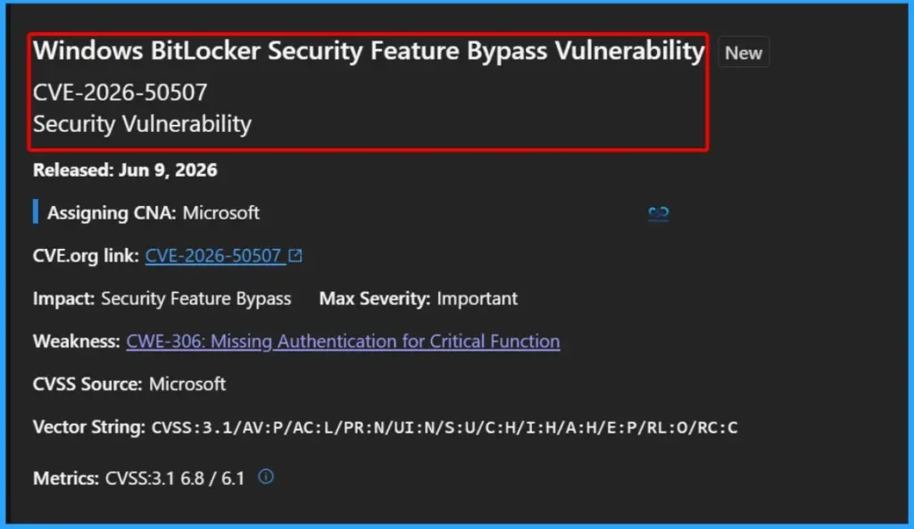
HTTP.sys Denial of Service Vulnerability – CVE-2026-49160
CVE-2026-49160 affects HTTP.sys, a core Windows component used by web servers and applications to process HTTP requests. An attacker could exploit this vulnerability remotely by sending specially crafted requests, potentially causing the affected system or service to become unavailable.
For organizations, this can lead to service outages, application downtime, and disruption of business operations, especially on servers hosting websites, APIs, web applications, or other HTTP-based services. While the vulnerability does not allow data theft or code execution, it can impact the availability of critical systems.
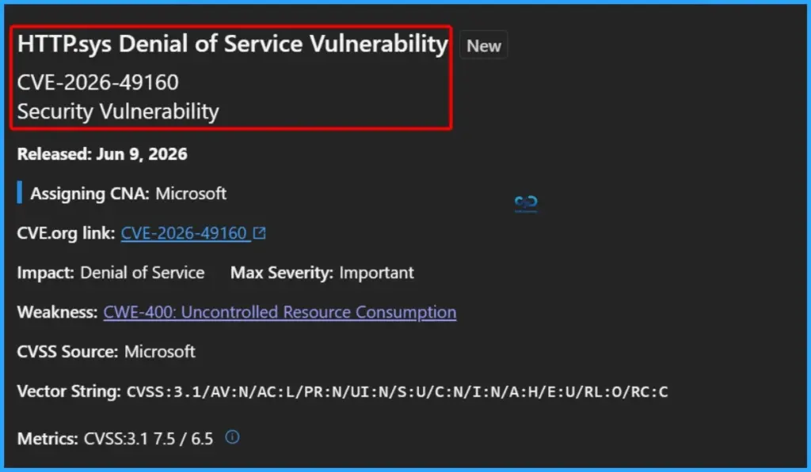
Windows Collaborative Translation Framework (CTFMON) Elevation of Privilege Vulnerability – CVE-2026-45586
For organisations, this means that a small security breach could quickly become a major incident. Once attackers gain SYSTEM privileges, they may be able to disable security tools, install malware, access sensitive data, create new administrator accounts, or move further within the environment.
CVE-2026-45586 is an Elevation of Privilege vulnerability in the Windows Collaborative Translation Framework (CTFMON). An attacker who already has access to a device with a standard user account could exploit this flaw to gain SYSTEM-level privileges, the highest level of access in Windows.
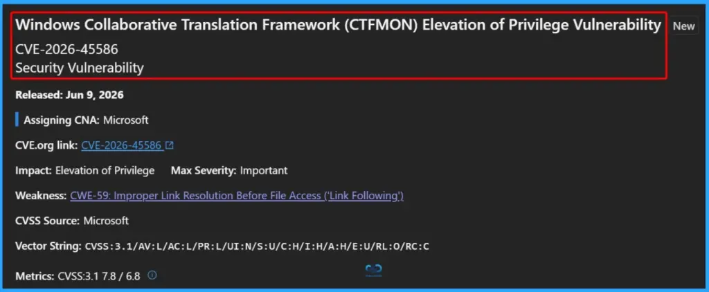
CVE-2020-17103: Windows Cloud Files Mini Filter Driver Elevation of Privilege Vulnerability
CVE-2020-17103 is an Elevation of Privilege (EoP) vulnerability in the Windows Cloud Files Mini Filter Driver that was originally released in December 2020 and updated by Microsoft on June 9, 2026. An attacker with local access to a device could exploit this vulnerability to gain elevated privileges, potentially obtaining higher-level permissions on the affected system.
Attackers often use privilege escalation vulnerabilities after gaining initial access to a device. Patching this vulnerability helps prevent attackers from gaining greater control over Windows systems and reduces the impact of a compromised user account.
| Vulnerability | Details |
|---|---|
| Name | Windows Cloud Files Mini Filter Driver Elevation of Privilege Vulnerability |
| CVE ID | CVE-2020-17103 |
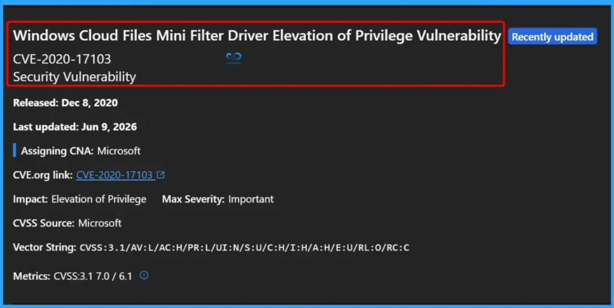
CVE-2026-45585: Windows BitLocker Security Feature Bypass Vulnerability (YellowKey)
CVE-2026-45585, also known as YellowKey, is an Important severity Windows BitLocker Security Feature Bypass vulnerability that was released on May 19, 2026, and updated on June 9, 2026. The vulnerability affects BitLocker protection and could allow an attacker with physical access to a device to bypass encryption safeguards and gain access to protected data. Microsoft has assigned it a CVSS 3.1 score of 6.8 and identified the weakness as CWE-77 (Command Injection).
Devices that are lost, stolen, or left unattended could be at greater risk if this vulnerability is not patched. Applying the latest security updates helps ensure BitLocker continues to protect organizational data from unauthorized access.
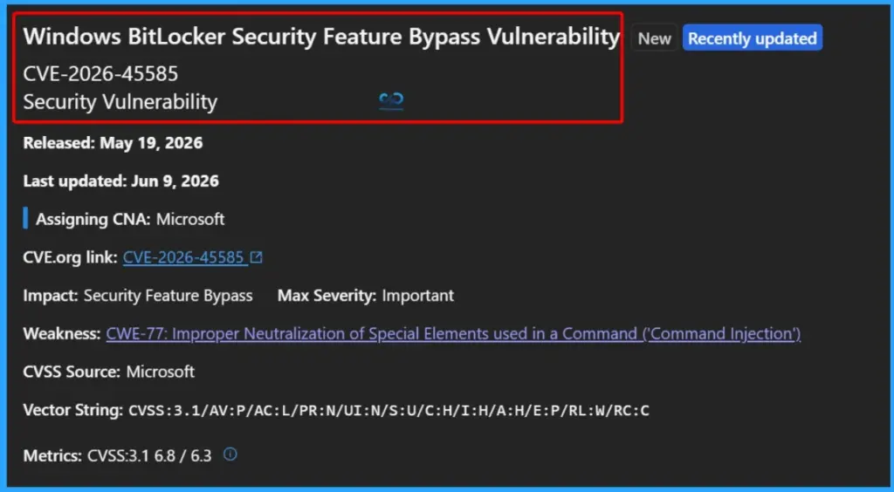
65 Elevation of Privilege Vulnerabilities
Microsoft fixed 65 Elevation of Privilege (EoP) vulnerabilities as part of the June 2026 Patch Tuesday release. These vulnerabilities are particularly important because they can allow attackers with limited access to a device to gain higher privileges, including administrator or SYSTEM-level access.
- CVE-2026-44809 Windows Common Log File System Driver Elevation of Privilege Vulnerability
- CVE-2026-44808 Windows DWM Core Library Elevation of Privilege Vulnerability
- CVE-2026-44807 Windows DWM Core Library Elevation of Privilege Vulnerability
- CVE-2026-44804 Windows DWM Core Library Elevation of Privilege Vulnerability
- CVE-2026-44802 Windows DWM Core Library Elevation of Privilege Vulnerability
- CVE-2026-42991 Windows Push Notifications Elevation of Privilege Vulnerability
- CVE-2026-42989 Winlogon Elevation of Privilege Vulnerability
- CVE-2026-42986 Microsoft Graphics Component Elevation of Privilege Vulnerability
- CVE-2026-42984 Windows Kernel Elevation of Privilege Vulnerability
- CVE-2026-42983 Windows DWM Core Library Elevation of Privilege Vulnerability
- CVE-2026-42980 NT OS Kernel Elevation of Privilege Vulnerability
- CVE-2026-42979 Windows Push Notifications Elevation of Privilege Vulnerability
- CVE-2026-42978 Windows Push Notifications Elevation of Privilege Vulnerability
- CVE-2026-42977 Windows Push Notifications Elevation of Privilege Vulnerability
- CVE-2026-42916 NT OS Kernel Elevation of Privilege Vulnerability
- CVE-2026-42912 Windows Telephony Service Elevation of Privilege Vulnerability
- CVE-2026-42911 Windows Ancillary Function Driver for WinSock Elevation of Privilege Vulnerability
- CVE-2026-42910 Windows Hotpatch Monitoring Service Elevation of Privilege Vulnerability
- CVE-2026-42905 Windows DWM Core Library Elevation of Privilege Vulnerability
- CVE-2026-42904 Windows TCP/IP Elevation of Privilege Vulnerability
- CVE-2026-42902 Microsoft PowerToys Elevation of Privilege Vulnerability
- CVE-2026-42837 Windows Projected File System Elevation of Privilege Vulnerability
- CVE-2026-42836 Windows Function Discovery Service (fdwsd.dll) Elevation of Privilege Vulnerability
- CVE-2026-42828 Windows Projected File System Elevation of Privilege Vulnerability
- CVE-2026-41108 Windows DNS Client Elevation of Privilege Vulnerability
- CVE-2026-41092 Microsoft Kinect Elevation of Privilege Vulnerability
- CVE-2026-40409 Windows Universal Disk Format File System Driver (UDFS) Elevation of Privilege Vulnerability
- CVE-2026-40404 Windows Universal Disk Format File System Driver (UDFS) Elevation of Privilege Vulnerability
- CVE-2026-40376 Visual Studio Code Elevation of Privilege Vulnerability
- CVE-2026-40371 Microsoft Dynamics 365 (on-premises) Elevation of Privilege Vulnerability
- CVE-2026-34335 Windows Ancillary Function Driver for WinSock Elevation of Privilege Vulnerability
- CVE-2026-33828 Windows Device Health Attestation (DHA) Elevation of Privilege Vulnerability
- CVE-2026-50512 Microsoft PC Manager Elevation of Privilege Vulnerability
- CVE-2026-50511 Microsoft PC Manager Elevation of Privilege Vulnerability
- CVE-2026-48583 Windows Kernel Elevation of Privilege Vulnerability
- CVE-2026-48578 Secure Boot Security Feature Bypass Vulnerability
- CVE-2026-48565 Windows Narrator Braille Elevation of Privilege Vulnerability
- CVE-2026-47648 Windows Storage Elevation of Privilege Vulnerability
- CVE-2026-47293 Microsoft Office Click-To-Run Elevation of Privilege Vulnerability
- CVE-2026-47292 Visual Studio Code MSSQL Extension Remote Code Execution Vulnerability
- CVE-2026-47281 Visual Studio Code Elevation of Privilege Vulnerability
- CVE-2026-45653 Windows Kernel Elevation of Privilege Vulnerability
- CVE-2026-45647 Microsoft Defender for Endpoint for Mac Elevation of Privilege Vulnerability
- CVE-2026-45644 Microsoft Live Share Canvas SDK Elevation of Privilege Vulnerability
- CVE-2026-45640 Windows Bluetooth Port Driver Elevation of Privilege Vulnerability
- CVE-2026-45638 Windows Ancillary Function Driver for WinSock Elevation of Privilege Vulnerability
- CVE-2026-45637 Microsoft DWM Core Library Elevation of Privilege Vulnerability
- CVE-2026-45605 Windows Bluetooth Service Elevation of Privilege Vulnerability
- CVE-2026-45603 Windows Ancillary Function Driver for WinSock Elevation of Privilege Vulnerability
- CVE-2026-45601 Windows Ancillary Function Driver for WinSock Elevation of Privilege Vulnerability
- CVE-2026-45600 Windows Kernel-Mode Driver Elevation of Privilege Vulnerability
- CVE-2026-45598 Windows Ancillary Function Driver for WinSock Elevation of Privilege Vulnerability
- CVE-2026-45597 Windows UI Automation Manager (uiamanager.dll) Elevation of Privilege Vulnerability
- CVE-2026-45596 Windows Ancillary Function Driver for WinSock Elevation of Privilege Vulnerability
- CVE-2026-45593 Windows SDK Elevation of Privilege Vulnerability
- CVE-2026-45592 Windows Internet (wininet.dll) Elevation of Privilege Vulnerability
- CVE-2026-45586 Windows Collaborative Translation Framework (CTFMON) Elevation of Privilege Vulnerability
- CVE-2026-45504 Microsoft Exchange Server Elevation of Privilege Vulnerability
- CVE-2026-45490 .NET SDK Elevation of Privilege Vulnerability
- CVE-2026-45487 Windows Program Compatibility Assistant Service Elevation of Privilege Vulnerability
- CVE-2026-45484 Microsoft SharePoint Elevation of Privilege Vulnerability
- CVE-2026-45476 Microsoft Azure Network Adapter Elevation of Privilege Vulnerability
- CVE-2026-44813 Windows DWM Core Library Elevation of Privilege Vulnerability
- CVE-2026-44811 Windows DWM Core Library Elevation of Privilege Vulnerability
- CVE-2026-44810 Microsoft Cryptographic Services Elevation of Privilege Vulnerability
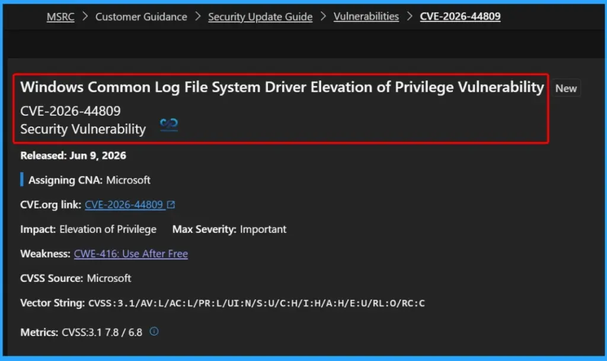
54 Remote Code Execution Vulnerabilities
Microsoft addressed 54 Remote Code Execution (RCE) vulnerabilities in the June 2026 Patch Tuesday release. RCE vulnerabilities are among the most critical security risks because they can allow attackers to run malicious code on a target system, often without requiring physical access.
- CVE-2026-48574 Windows Media Remote Code Execution Vulnerability
- CVE-2026-48563 Remote Desktop Client Remote Code Execution Vulnerability
- CVE-2026-47654 Remote Desktop Client Remote Code Execution Vulnerability
- CVE-2026-47653 Remote Desktop Client Remote Code Execution Vulnerability
- CVE-2026-47652 Windows Hyper-V Remote Code Execution Vulnerability
- CVE-2026-47643 Azure Stack Edge Remote Code Execution Vulnerability
- CVE-2026-47635 Microsoft Outlook and Word Remote Code Execution Vulnerability
- CVE-2026-47298 Microsoft SharePoint Server Remote Code Execution Vulnerability
- CVE-2026-47291 HTTP.sys Remote Code Execution Vulnerability
- CVE-2026-47289 Remote Desktop Client Remote Code Execution Vulnerability
- CVE-2026-47288 Windows Kerberos Key Distribution Center (KDC) Remote Code Execution
- CVE-2026-45657 Windows Kernel Remote Code Execution Vulnerability
- CVE-2026-45648 Windows Active Directory Domain Services Remote Code Execution Vulnerability
- CVE-2026-45645 Microsoft Office Remote Code Execution Vulnerability
- CVE-2026-45643 Microsoft Word Remote Code Execution Vulnerability
- CVE-2026-45641 Windows Hyper-V Remote Code Execution Vulnerability
- CVE-2026-45636 Windows NTFS Remote Code Execution Vulnerability
- CVE-2026-45635 Windows UPnP Device Host Remote Code Execution Vulnerability
- CVE-2026-45607 Windows Hyper-V Remote Code Execution Vulnerability
- CVE-2026-45599 Windows UPnP Device Host Remote Code Execution Vulnerability
- CVE-2026-45583 Microsoft Exchange Server Remote Code Execution Vulnerability
- CVE-2026-45486 Microsoft Word Remote Code Execution Vulnerability
- CVE-2026-45475 Microsoft Office Remote Code Execution Vulnerability
- CVE-2026-45474 Microsoft Office Remote Code Execution Vulnerability
- CVE-2026-45472 Microsoft Office Remote Code Execution Vulnerability
- CVE-2026-45471 Microsoft Word Remote Code Execution Vulnerability
- CVE-2026-45469 Microsoft Excel Remote Code Execution Vulnerability
- CVE-2026-45463 Microsoft Office Remote Code Execution Vulnerability
- CVE-2026-45461 Microsoft Office Remote Code Execution Vulnerability
- CVE-2026-45458 Microsoft Outlook and Word Remote Code Execution Vulnerability
- CVE-2026-45457 Microsoft Word Remote Code Execution Vulnerability
- CVE-2026-45456 Microsoft Outlook and Word Remote Code Execution Vulnerability
- CVE-2026-45454 Microsoft SharePoint Remote Code Execution Vulnerability
- CVE-2026-44824 Microsoft Office Remote Code Execution Vulnerability
- CVE-2026-44823 Microsoft Excel Remote Code Execution Vulnerability
- CVE-2026-44820 Microsoft Excel Remote Code Execution Vulnerability
- CVE-2026-44819 Microsoft Office Remote Code Execution Vulnerability
- CVE-2026-44818 Microsoft Excel Remote Code Execution Vulnerability
- CVE-2026-44817 Microsoft Excel Remote Code Execution Vulnerability
- CVE-2026-44815 DHCP Client Service Remote Code Execution Vulnerability
- CVE-2026-44812 Windows Graphics Component Remote Code Execution Vulnerability
- CVE-2026-44803 Windows Graphics Component Remote Code Execution Vulnerability
- CVE-2026-44801 Remote Desktop Client Remote Code Execution Vulnerability
- CVE-2026-44799 Remote Desktop Client Remote Code Execution Vulnerability
- CVE-2026-42993 Remote Desktop Client Remote Code Execution Vulnerability
- CVE-2026-42992 Remote Desktop Client Remote Code Execution Vulnerability
- CVE-2026-42987 Windows Deployment Services (WDS) Remote Code Execution
- CVE-2026-42985 Remote Desktop Client Remote Code Execution Vulnerability
- CVE-2026-42981 Windows Performance Monitor Remote Code Execution Vulnerability
- CVE-2026-42974 Windows Performance Monitor Remote Code Execution Vulnerability
- CVE-2026-42913 Remote Desktop Client Remote Code Execution Vulnerability
- CVE-2026-42909 Remote Desktop Client Remote Code Execution Vulnerability
- CVE-2026-32193 Azure Kubernetes Service (AKS) Remote Code Execution Vulnerability
- CVE-2026-26142 Nuance PowerScribe Remote Code Execution Vulnerability
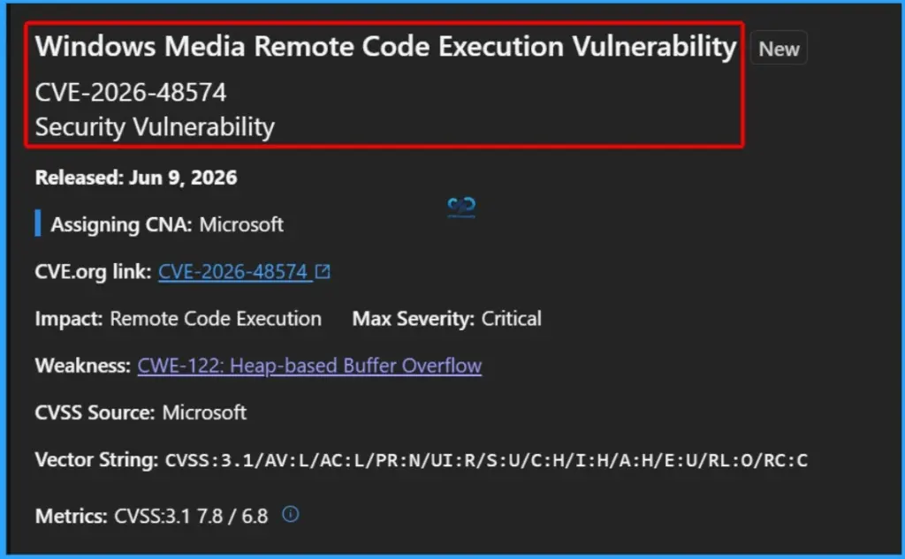
26 Information Disclosure Vulnerabilities
Microsoft fixed 26 Information Disclosure vulnerabilities in the June 2026 Patch Tuesday release. These vulnerabilities could allow attackers to access sensitive information that should not be exposed, potentially helping them gather intelligence for further attacks.
- CVE-2026-48566 Windows DWM Core Library Information Disclosure Vulnerability
- CVE-2026-47284 Visual Studio Code Information Disclosure Vulnerability
- CVE-2026-45639 Windows Remote Desktop Protocol (RDP) Information Disclosure Vulnerability
- CVE-2026-45634 Windows DHCP Client Information Disclosure Vulnerability
- CVE-2026-45608 Windows DHCP Client Information Disclosure Vulnerability
- CVE-2026-45604 Windows Managed Installer Information Disclosure Vulnerability
- CVE-2026-45594 Windows Application Identity (AppID) Information Disclosure Vulnerability
- CVE-2026-45503 Microsoft Exchange Server Information Disclosure Vulnerability
- CVE-2026-45502 Microsoft Exchange Server Information Disclosure Vulnerability
- CVE-2026-45485 Microsoft Office Information Disclosure Vulnerability
- CVE-2026-45466 Microsoft Word Information Disclosure Vulnerability
- CVE-2026-45460 Microsoft Office Information Disclosure Vulnerability
- CVE-2026-45455 Microsoft Excel Information Disclosure Vulnerability
- CVE-2026-44822 Microsoft Excel Information Disclosure Vulnerability
- CVE-2026-44821 Microsoft Office Information Disclosure Vulnerability
- CVE-2026-44814 Windows DWM Core Library Information Disclosure Vulnerability
- CVE-2026-42973 Windows Push Notification Information Disclosure Vulnerability
- CVE-2026-42972 Windows Hyper-V Information Disclosure Vulnerability
- CVE-2026-42971 Windows Push Notification Information Disclosure Vulnerability
- CVE-2026-42970 Windows Push Notification Information Disclosure Vulnerability
- CVE-2026-42969 Windows Push Notification Information Disclosure Vulnerability
- CVE-2026-42968 Windows Telephony Server Information Disclosure Vulnerability
- CVE-2026-42908 Windows Remote Desktop Protocol (RDP) Information Disclosure Vulnerability
- CVE-2026-42907 Windows Shell Information Disclosure Vulnerability
- CVE-2026-42906 Windows Shell Information Disclosure Vulnerability
- CVE-2026-42835 Microsoft Teams for Android Information Disclosure Vulnerability
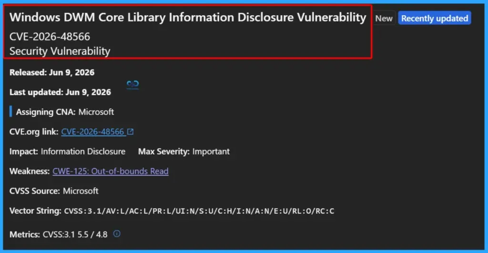
7 Denial of Service Vulnerabilities
Microsoft addressed 7 Denial of Service (DoS) vulnerabilities in the June 2026 Patch Tuesday release. These vulnerabilities could allow attackers to disrupt services, cause system instability, or make applications and servers unavailable to legitimate users.
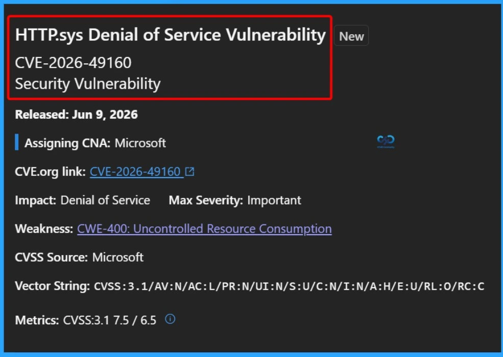
19 Security Feature Bypass Vulnerabilities
Microsoft fixed 19 Security Feature Bypass vulnerabilities in the June 2026 Patch Tuesday release. These vulnerabilities could allow attackers to bypass built-in Windows and Microsoft security protections that are designed to prevent unauthorized access or malicious activity.
- CVE-2026-50507 Windows BitLocker Security Feature Bypass Vulnerability
- CVE-2026-49161 Microsoft PC Manager Security Feature Bypass Vulnerability
- CVE-2026-48576 Secure Boot Security Feature Bypass Vulnerability
- CVE-2026-48575 Secure Boot Security Feature Bypass Vulnerability
- CVE-2026-48573 Secure Boot Security Feature Bypass Vulnerability
- CVE-2026-48570 Secure Boot Security Feature Bypass Vulnerability
- CVE-2026-48569 Visual Studio Code Security Feature Bypass Vulnerability
- CVE-2026-48568 Secure Boot Security Feature Bypass Vulnerability
- CVE-2026-47656 Windows Boot Manager Security Feature Bypass Vulnerability
- CVE-2026-45658 Windows BitLocker Security Feature Bypass Vulnerability
- CVE-2026-45656 UEFI Secure Boot Security Feature Bypass Vulnerability
- CVE-2026-45655 Windows BitLocker Security Feature Bypass Vulnerability
- CVE-2026-45654 Secure Boot Security Feature Bypass Vulnerability
- CVE-2026-45595 Windows Mark of the Web Security Feature Bypass Vulnerability
- CVE-2026-45588 Secure Boot Security Feature Bypass Vulnerability
- CVE-2026-45482 Microsoft Visual Studio Code CoPilot Chat Security Feature Bypass Vulnerability
- CVE-2026-45459 Microsoft Excel Security Feature Bypass Vulnerability
- CVE-2026-42829 Windows Administrator Protection Secure Feature Bypass Vulnerability
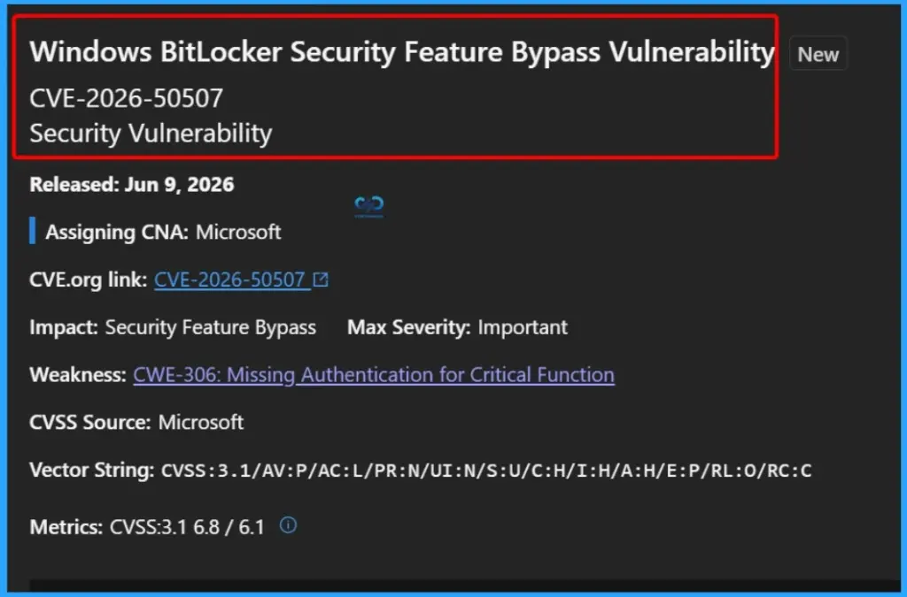
27 Spoofing Vulnerabilities
Microsoft addressed 27 Spoofing vulnerabilities in the June 2026 Patch Tuesday release. Spoofing vulnerabilities can allow attackers to impersonate trusted users, systems, or services, potentially tricking users and applications into accepting malicious content or unauthorized requests.
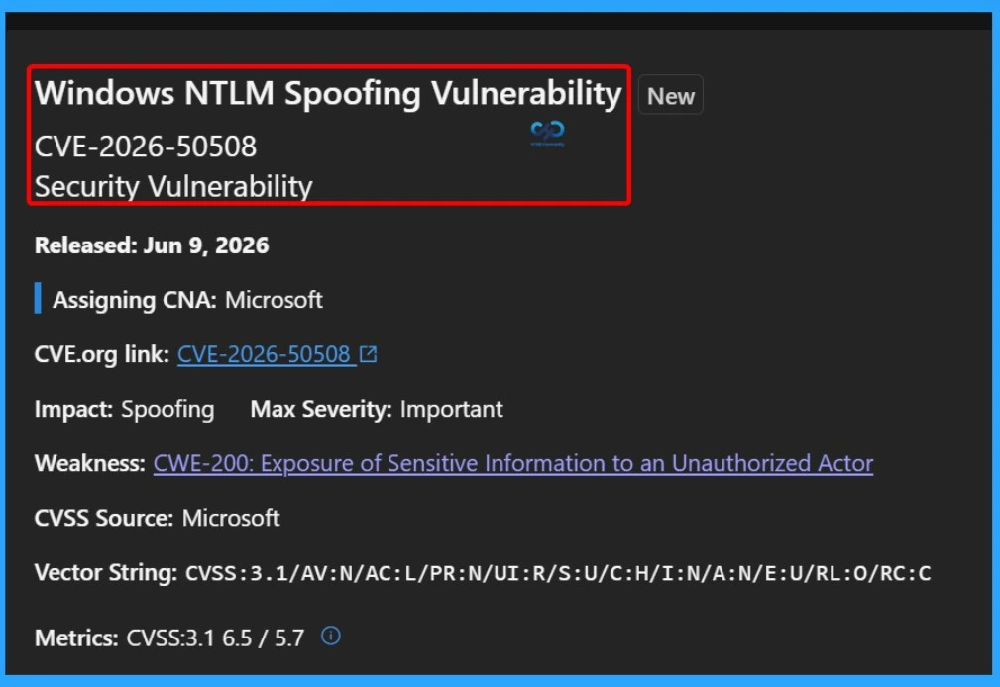
3 Tampering Vulnerabilities
Microsoft fixed 3 Tampering vulnerabilities in the June 2026 Patch Tuesday release. Tampering vulnerabilities can allow attackers to modify data, settings, or system processes without authorization, potentially affecting the integrity and reliability of applications and services.
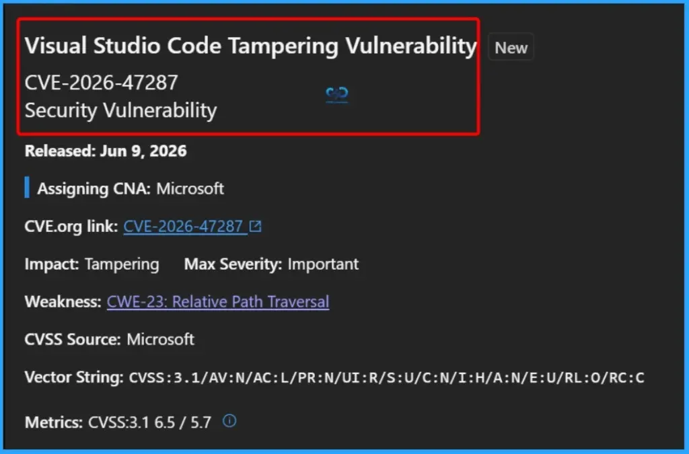
Need Further Assistance or Have Technical Questions?
Join the LinkedIn Page and Telegram group to get the latest step-by-step guides and news updates. Join our Meetup Page to participate in User group meetings. Also, join the WhatsApp Community and the Whatsapp channel to get the latest news on Microsoft Technologies. We are there on Reddit as well.
Author
Anoop C Nair is a Workplace Technology solution architect with 25+ years of experience. Microsoft Certified Trainer. Microsoft MVP from 2015 onwards for consecutive 11+ years! He is a blogger, Speaker, and Founder of HTMD Community and HTMD Conference. His main focus is on Device Management technologies like Intune, Windows, and Cloud PC. He writes about technologies like Intune, SCCM, Windows, Cloud PC, Entra, and Microsoft Security.